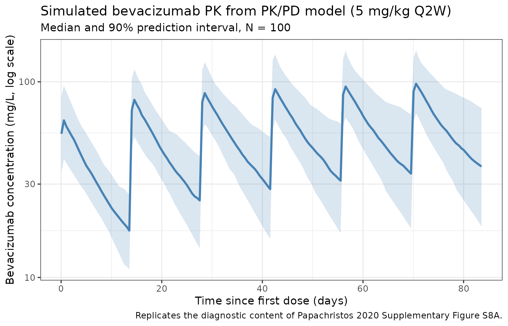
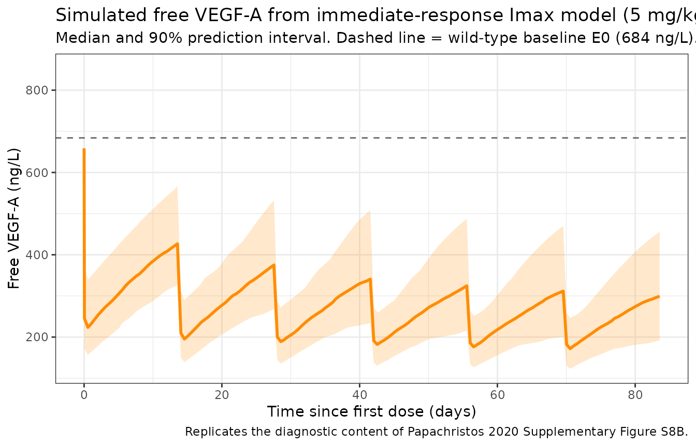
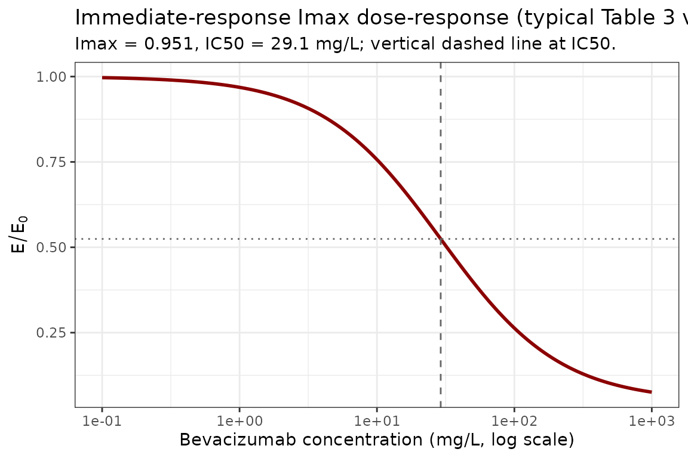

Papachristos_2020_bevacizumab_pkpd
Source:vignettes/articles/Papachristos_2020_bevacizumab_pkpd.Rmd
Papachristos_2020_bevacizumab_pkpd.RmdModel and source
- Citation: Papachristos A, Karatza E, Kalofonos H, Karalis V. Pharmacogenetics in Model-Based Optimization of Bevacizumab Therapy for Metastatic Colorectal Cancer. Int J Mol Sci. 2020;21(11):3753. doi:[10.3390/ijms21113753](https://doi.org/10.3390/ijms21113753).
- Description: Two-compartment PK plus immediate-response Imax inhibition of free VEGF-A by IV bevacizumab in adults with metastatic colorectal cancer (mCRC), with allometric weight scaling and ICAM-1 / VEGF-A genotype covariate effects (Table 3 of Papachristos 2020).
- Modality: Therapeutic anti-VEGF-A monoclonal antibody (humanized IgG1, MW ≈ 149 kDa).
This vignette validates the PK/PD variant (Table 3). Papachristos
2020 also reports a descriptive PK model (Table 1, packaged as
Papachristos_2020_bevacizumab_pk) and a binding QSS TMDD
model (Table 2, packaged as
Papachristos_2020_bevacizumab_qss).
TODO (co-equality framing). The three Papachristos 2020 models are CO-EQUAL final models, not a hierarchical base / extended pair. Each pursues a different objective: descriptive PK, mechanistic target binding, or drug-effect characterization (this vignette). Reviewer please confirm this framing and the choice to package all three.
Errata note (text vs Table)
Section 2.4 of the paper contains a copy-paste error in the covariate-effect equation for inter-compartmental clearance Q. The text reads:
Q = Qpop · exp(0.378) [where] cat takes the value 1 for the mutant … VEGF-A rs699947 gene or 0 for the wild-type.
The numerical value 0.378 is identical to the
VEGF-A rs1570360 mutant on Q coefficient from Table 1 (PK
model) and is a copy-paste error. Table 3 of the same paper
reports the rs699947 effect on Q in the PK/PD model as -0.414,
and the surrounding narrative confirms the direction:
“Inter-compartmental clearance (Q) was lower in patients with mutant
type gene VEGF-A rs699947” (paper section 2.4, paragraph before the
equation). The packaged model uses Table 3’s -0.414;
the in-file source-trace comment for e_vegfa_rs699947_q
flags the text-vs-table discrepancy.
No formal corrigendum has been published at the time of extraction (April 2026).
Population
The Papachristos 2020 cohort comprised 46 adult patients with histologically confirmed metastatic colorectal cancer (ECOG 0-2) treated at a single Greek centre. Baseline demographics (paper section 2.1):
- Sex: 61% male, 39% female.
- Median (IQR) weight 74.5 kg (64.15-81.75); median (IQR) age 63 years (53-72).
- Race / ethnicity: Greek; not formally tabulated.
- Dosing: 5 mg/kg IV every 2 weeks (76% of patients) or 7.5 mg/kg IV every 3 weeks (24%).
- Sample sizes: 156 bevacizumab + 169 free VEGF-A serum concentrations.
Two SNPs entered the final PK/PD model: ICAM-1 rs1799969
(effect on CL) and VEGF-A rs699947 (effect on Q).
The same metadata is available programmatically via
readModelDb("Papachristos_2020_bevacizumab_pkpd")$population.
Source trace
| Parameter (model name) | Value | Source |
|---|---|---|
lcl (CLpop, L/day) |
log(0.388) | Papachristos 2020 Table 3, CLpop |
lvc (V1pop, L) |
log(5.48) | Papachristos 2020 Table 3, V1pop |
lq (Qpop, L/day) |
log(0.315) | Papachristos 2020 Table 3, Qpop |
lvp (V2, L) |
log(8.81) | Papachristos 2020 Table 3, V2(L) |
le0 (E0, ng/L) |
log(684) | Papachristos 2020 Table 3, E0pop |
imaxv (Imax, fraction) |
0.951 | Papachristos 2020 Table 3, Imaxpop |
lic50 (IC50, mg/L) |
log(29.1) | Papachristos 2020 Table 3, IC50pop |
e_wt_cl (allometric exponent) |
0.78 | Papachristos 2020 Table 3, “log(weight/70) on CL” |
e_icam1_rs1799969_cl |
-0.423 | Papachristos 2020 Table 3, “ICAM-1 rs1799969 mutant on CL” |
e_vegfa_rs699947_q |
-0.414 | Papachristos 2020 Table 3, “VEGF-A rs699947 mutant on Q” — supersedes the text typo “0.378” in section 2.4 |
etalcl variance |
0.11424 | Papachristos 2020 Table 3, ω_CL = 0.338 (var = SD²) |
etalq variance |
0.36120 | Papachristos 2020 Table 3, ω_Q = 0.601 |
cov(etalcl, etalq) |
-0.19891 | Papachristos 2020 Table 3, ρ(Q,CL) = -0.979 × 0.338 × 0.601 |
etalvc variance |
0.03098 | Papachristos 2020 Table 3, ω_V1 = 0.176 |
etalvp variance |
0.33524 | Papachristos 2020 Table 3, ω_V2 = 0.579 |
etale0 variance |
0.02789 | Papachristos 2020 Table 3, ω_E0 = 0.167 |
propSd |
0.238 | Papachristos 2020 Table 3, σ_BEVA |
propSd_E |
0.264 | Papachristos 2020 Table 3, σ_VEGF |
Equations (paper section 2.4):
Virtual cohort
set.seed(2020)
n_subj <- 100
cohort <- tibble(
ID = seq_len(n_subj),
WT = pmin(pmax(rlnorm(n_subj, log(74.5), 0.18), 45), 130),
SNP_ICAM1_RS1799969 = rbinom(n_subj, 1, 0.20),
SNP_VEGFA_RS699947 = rbinom(n_subj, 1, 0.52)
)
inf_dur <- 1.5 / 24 # 90-min infusion (days)
n_doses_q2w <- 6
sim_horizon <- 84 # 12 weeks total follow-up
dose_times <- seq(0, by = 14, length.out = n_doses_q2w)
obs_times <- sort(unique(c(0, seq(0.05, sim_horizon, by = 0.5))))
build_events <- function(pop, mgkg, dose_times, regimen_label) {
amt_per_subject <- pop$WT * mgkg
d_dose <- pop |>
dplyr::mutate(amt = amt_per_subject) |>
tidyr::crossing(time = dose_times) |>
dplyr::mutate(evid = 1L, cmt = "central", dur = inf_dur,
treatment = regimen_label)
d_obs_cc <- pop |>
tidyr::crossing(time = obs_times) |>
dplyr::mutate(amt = 0, evid = 0L, cmt = "Cc", dur = NA_real_,
treatment = regimen_label)
d_obs_e <- pop |>
tidyr::crossing(time = obs_times) |>
dplyr::mutate(amt = 0, evid = 0L, cmt = "E", dur = NA_real_,
treatment = regimen_label)
dplyr::bind_rows(d_dose, d_obs_cc, d_obs_e) |>
dplyr::rename(id = ID) |>
dplyr::arrange(id, time, dplyr::desc(evid)) |>
as.data.frame()
}
events <- build_events(cohort, mgkg = 5, dose_times = dose_times,
regimen_label = "5 mg/kg Q2W")Simulation
mod <- rxode2::rxode2(readModelDb("Papachristos_2020_bevacizumab_pkpd"))
#> ℹ parameter labels from comments will be replaced by 'label()'
sim <- rxode2::rxSolve(mod, events = events,
keep = c("treatment"),
returnType = "data.frame")
# Endpoint compartments after 2 ODE states: Cc -> CMT 3, E -> CMT 4
sim_cc <- sim |> dplyr::filter(CMT == 3)
sim_e <- sim |> dplyr::filter(CMT == 4)Replicate published figures
Bevacizumab concentration-time profile (replicates Supplementary Figure S8A diagnostic)
sim_cc_summary <- sim_cc |>
dplyr::filter(time > 0) |>
dplyr::group_by(time) |>
dplyr::summarise(
median = stats::median(Cc, na.rm = TRUE),
lo = stats::quantile(Cc, 0.05, na.rm = TRUE),
hi = stats::quantile(Cc, 0.95, na.rm = TRUE),
.groups = "drop"
)
ggplot(sim_cc_summary, aes(time, median)) +
geom_ribbon(aes(ymin = lo, ymax = hi), alpha = 0.2, fill = "steelblue") +
geom_line(linewidth = 1, colour = "steelblue") +
scale_y_log10() +
labs(
x = "Time since first dose (days)",
y = "Bevacizumab concentration (mg/L, log scale)",
title = "Simulated bevacizumab PK from PK/PD model (5 mg/kg Q2W)",
subtitle = paste0("Median and 90% prediction interval, N = ", n_subj),
caption = "Replicates the diagnostic content of Papachristos 2020 Supplementary Figure S8A."
) +
theme_bw()
Free VEGF-A inhibition profile (replicates Supplementary Figure S8B diagnostic)
sim_e_summary <- sim_e |>
dplyr::group_by(time) |>
dplyr::summarise(
median = stats::median(E, na.rm = TRUE),
lo = stats::quantile(E, 0.05, na.rm = TRUE),
hi = stats::quantile(E, 0.95, na.rm = TRUE),
.groups = "drop"
)
ggplot(sim_e_summary, aes(time, median)) +
geom_ribbon(aes(ymin = lo, ymax = hi), alpha = 0.2, fill = "darkorange") +
geom_line(linewidth = 1, colour = "darkorange") +
geom_hline(yintercept = 684, linetype = "dashed", colour = "grey40") +
labs(
x = "Time since first dose (days)",
y = "Free VEGF-A (ng/L)",
title = "Simulated free VEGF-A from immediate-response Imax model (5 mg/kg Q2W)",
subtitle = "Median and 90% prediction interval. Dashed line = wild-type baseline E0 (684 ng/L).",
caption = "Replicates the diagnostic content of Papachristos 2020 Supplementary Figure S8B."
) +
theme_bw()
Imax dose-response (typical-value)
The Imax curve as a function of bevacizumab concentration is the
identifying signature of this model. The plot below shows the algebraic
relationship E / E0 = 1 - Imax * Cc / (IC50 + Cc) using the
Table 3 typical values.
imax <- 0.951
ic50 <- 29.1
cc_grid <- 10^seq(-1, 3, length.out = 200)
ratio <- 1 - imax * cc_grid / (ic50 + cc_grid)
ggplot(data.frame(Cc = cc_grid, ratio = ratio), aes(Cc, ratio)) +
geom_line(linewidth = 1, colour = "darkred") +
geom_vline(xintercept = ic50, linetype = "dashed", colour = "grey40") +
geom_hline(yintercept = 1 - imax / 2, linetype = "dotted", colour = "grey40") +
scale_x_log10() +
labs(
x = "Bevacizumab concentration (mg/L, log scale)",
y = expression(E / E[0]),
title = "Immediate-response Imax dose-response (typical Table 3 values)",
subtitle = paste0("Imax = ", imax, ", IC50 = ", ic50, " mg/L; vertical dashed line at IC50.")
) +
theme_bw()
PKNCA validation (bevacizumab)
start_ss <- max(dose_times)
end_ss <- start_ss + 14
conc_df <- sim_cc |>
dplyr::filter(time >= start_ss, time <= end_ss, !is.na(Cc)) |>
dplyr::mutate(time_rel = time - start_ss) |>
dplyr::select(id, treatment, time_rel, Cc)
dose_df <- events |>
dplyr::filter(treatment == "5 mg/kg Q2W", evid == 1, time == start_ss) |>
dplyr::mutate(time_rel = 0) |>
dplyr::select(id, treatment, time_rel, amt)
conc_obj <- PKNCA::PKNCAconc(conc_df, Cc ~ time_rel | treatment + id,
concu = "mg/L", timeu = "day")
dose_obj <- PKNCA::PKNCAdose(dose_df, amt ~ time_rel | treatment + id,
doseu = "mg")
intervals <- data.frame(
start = 0,
end = 14,
cmax = TRUE,
tmax = TRUE,
cmin = TRUE,
auclast = TRUE,
cav = TRUE
)
nca_data <- PKNCA::PKNCAdata(conc_obj, dose_obj, intervals = intervals)
nca_res <- PKNCA::pk.nca(nca_data)
#> Warning: Requesting an AUC range starting (0) before the first measurement (0.05) is not allowed
#> Requesting an AUC range starting (0) before the first measurement (0.05) is not allowed
#> Requesting an AUC range starting (0) before the first measurement (0.05) is not allowed
#> Requesting an AUC range starting (0) before the first measurement (0.05) is not allowed
#> Requesting an AUC range starting (0) before the first measurement (0.05) is not allowed
#> Requesting an AUC range starting (0) before the first measurement (0.05) is not allowed
#> Requesting an AUC range starting (0) before the first measurement (0.05) is not allowed
#> Requesting an AUC range starting (0) before the first measurement (0.05) is not allowed
#> Requesting an AUC range starting (0) before the first measurement (0.05) is not allowed
#> Requesting an AUC range starting (0) before the first measurement (0.05) is not allowed
#> Requesting an AUC range starting (0) before the first measurement (0.05) is not allowed
#> Requesting an AUC range starting (0) before the first measurement (0.05) is not allowed
#> Requesting an AUC range starting (0) before the first measurement (0.05) is not allowed
#> Requesting an AUC range starting (0) before the first measurement (0.05) is not allowed
#> Requesting an AUC range starting (0) before the first measurement (0.05) is not allowed
#> Requesting an AUC range starting (0) before the first measurement (0.05) is not allowed
#> Requesting an AUC range starting (0) before the first measurement (0.05) is not allowed
#> Requesting an AUC range starting (0) before the first measurement (0.05) is not allowed
#> Requesting an AUC range starting (0) before the first measurement (0.05) is not allowed
#> Requesting an AUC range starting (0) before the first measurement (0.05) is not allowed
#> Requesting an AUC range starting (0) before the first measurement (0.05) is not allowed
#> Requesting an AUC range starting (0) before the first measurement (0.05) is not allowed
#> Requesting an AUC range starting (0) before the first measurement (0.05) is not allowed
#> Requesting an AUC range starting (0) before the first measurement (0.05) is not allowed
#> Requesting an AUC range starting (0) before the first measurement (0.05) is not allowed
#> Requesting an AUC range starting (0) before the first measurement (0.05) is not allowed
#> Requesting an AUC range starting (0) before the first measurement (0.05) is not allowed
#> Requesting an AUC range starting (0) before the first measurement (0.05) is not allowed
#> Requesting an AUC range starting (0) before the first measurement (0.05) is not allowed
#> Requesting an AUC range starting (0) before the first measurement (0.05) is not allowed
#> Requesting an AUC range starting (0) before the first measurement (0.05) is not allowed
#> Requesting an AUC range starting (0) before the first measurement (0.05) is not allowed
#> Requesting an AUC range starting (0) before the first measurement (0.05) is not allowed
#> Requesting an AUC range starting (0) before the first measurement (0.05) is not allowed
#> Requesting an AUC range starting (0) before the first measurement (0.05) is not allowed
#> Requesting an AUC range starting (0) before the first measurement (0.05) is not allowed
#> Requesting an AUC range starting (0) before the first measurement (0.05) is not allowed
#> Requesting an AUC range starting (0) before the first measurement (0.05) is not allowed
#> Requesting an AUC range starting (0) before the first measurement (0.05) is not allowed
#> Requesting an AUC range starting (0) before the first measurement (0.05) is not allowed
#> Requesting an AUC range starting (0) before the first measurement (0.05) is not allowed
#> Requesting an AUC range starting (0) before the first measurement (0.05) is not allowed
#> Requesting an AUC range starting (0) before the first measurement (0.05) is not allowed
#> Requesting an AUC range starting (0) before the first measurement (0.05) is not allowed
#> Requesting an AUC range starting (0) before the first measurement (0.05) is not allowed
#> Requesting an AUC range starting (0) before the first measurement (0.05) is not allowed
#> Requesting an AUC range starting (0) before the first measurement (0.05) is not allowed
#> Requesting an AUC range starting (0) before the first measurement (0.05) is not allowed
#> Requesting an AUC range starting (0) before the first measurement (0.05) is not allowed
#> Requesting an AUC range starting (0) before the first measurement (0.05) is not allowed
#> Requesting an AUC range starting (0) before the first measurement (0.05) is not allowed
#> Requesting an AUC range starting (0) before the first measurement (0.05) is not allowed
#> Requesting an AUC range starting (0) before the first measurement (0.05) is not allowed
#> Requesting an AUC range starting (0) before the first measurement (0.05) is not allowed
#> Requesting an AUC range starting (0) before the first measurement (0.05) is not allowed
#> Requesting an AUC range starting (0) before the first measurement (0.05) is not allowed
#> Requesting an AUC range starting (0) before the first measurement (0.05) is not allowed
#> Requesting an AUC range starting (0) before the first measurement (0.05) is not allowed
#> Requesting an AUC range starting (0) before the first measurement (0.05) is not allowed
#> Requesting an AUC range starting (0) before the first measurement (0.05) is not allowed
#> Requesting an AUC range starting (0) before the first measurement (0.05) is not allowed
#> Requesting an AUC range starting (0) before the first measurement (0.05) is not allowed
#> Requesting an AUC range starting (0) before the first measurement (0.05) is not allowed
#> Requesting an AUC range starting (0) before the first measurement (0.05) is not allowed
#> Requesting an AUC range starting (0) before the first measurement (0.05) is not allowed
#> Requesting an AUC range starting (0) before the first measurement (0.05) is not allowed
#> Requesting an AUC range starting (0) before the first measurement (0.05) is not allowed
#> Requesting an AUC range starting (0) before the first measurement (0.05) is not allowed
#> Requesting an AUC range starting (0) before the first measurement (0.05) is not allowed
#> Requesting an AUC range starting (0) before the first measurement (0.05) is not allowed
#> Requesting an AUC range starting (0) before the first measurement (0.05) is not allowed
#> Requesting an AUC range starting (0) before the first measurement (0.05) is not allowed
#> Requesting an AUC range starting (0) before the first measurement (0.05) is not allowed
#> Requesting an AUC range starting (0) before the first measurement (0.05) is not allowed
#> Requesting an AUC range starting (0) before the first measurement (0.05) is not allowed
#> Requesting an AUC range starting (0) before the first measurement (0.05) is not allowed
#> Requesting an AUC range starting (0) before the first measurement (0.05) is not allowed
#> Requesting an AUC range starting (0) before the first measurement (0.05) is not allowed
#> Requesting an AUC range starting (0) before the first measurement (0.05) is not allowed
#> Requesting an AUC range starting (0) before the first measurement (0.05) is not allowed
#> Requesting an AUC range starting (0) before the first measurement (0.05) is not allowed
#> Requesting an AUC range starting (0) before the first measurement (0.05) is not allowed
#> Requesting an AUC range starting (0) before the first measurement (0.05) is not allowed
#> Requesting an AUC range starting (0) before the first measurement (0.05) is not allowed
#> Requesting an AUC range starting (0) before the first measurement (0.05) is not allowed
#> Requesting an AUC range starting (0) before the first measurement (0.05) is not allowed
#> Requesting an AUC range starting (0) before the first measurement (0.05) is not allowed
#> Requesting an AUC range starting (0) before the first measurement (0.05) is not allowed
#> Requesting an AUC range starting (0) before the first measurement (0.05) is not allowed
#> Requesting an AUC range starting (0) before the first measurement (0.05) is not allowed
#> Requesting an AUC range starting (0) before the first measurement (0.05) is not allowed
#> Requesting an AUC range starting (0) before the first measurement (0.05) is not allowed
#> Requesting an AUC range starting (0) before the first measurement (0.05) is not allowed
#> Requesting an AUC range starting (0) before the first measurement (0.05) is not allowed
#> Requesting an AUC range starting (0) before the first measurement (0.05) is not allowed
#> Requesting an AUC range starting (0) before the first measurement (0.05) is not allowed
#> Requesting an AUC range starting (0) before the first measurement (0.05) is not allowed
#> Requesting an AUC range starting (0) before the first measurement (0.05) is not allowed
#> Requesting an AUC range starting (0) before the first measurement (0.05) is not allowed
#> Requesting an AUC range starting (0) before the first measurement (0.05) is not allowed
knitr::kable(summary(nca_res),
caption = "Steady-state NCA for bevacizumab (5 mg/kg Q2W, last simulated interval, PK/PD model).")| Interval Start | Interval End | treatment | N | AUClast (day*mg/L) | Cmax (mg/L) | Cmin (mg/L) | Tmax (day) | Cav (mg/L) |
|---|---|---|---|---|---|---|---|---|
| 0 | 14 | 5 mg/kg Q2W | 100 | NC | 102 [20.3] | 35.7 [53.3] | 0.550 [0.550, 0.550] | NC |
Comparison of PK parameters across the three models
The three Papachristos 2020 models share the same data but use different structural assumptions; the typical PK parameter estimates differ accordingly. The descriptive-PK model (Table 1) does not account for target-mediated clearance and yields a smaller V1 and CL; the binding QSS and PK/PD models, which both include drug-target binding effects (explicit in QSS, implicit in PK/PD via the Imax mechanism), yield larger V1 and (in the PK/PD case) larger CL.
| Model | CL (L/day) | V1 (L) | Q (L/day) | V2 (L) | Source |
|---|---|---|---|---|---|
| Descriptive PK | 0.200 | 3.09 | 0.350 | 2.39 | Table 1 |
| Binding QSS | 0.344 | 5.83 | 0.136 | 3.17 | Table 2 |
| PK/PD (this) | 0.388 | 5.48 | 0.315 | 8.81 | Table 3 |
Assumptions and deviations
- Co-equality framing of the three Papachristos 2020 models. The PK / Binding QSS / PK/PD models in Papachristos 2020 are co-equal final models, each pursuing a different objective (descriptive PK, mechanistic target binding, drug-effect characterization [this vignette]). They are not a hierarchical base / extended pair. All three are packaged separately in nlmixr2lib.
-
Section 2.4 text-vs-Table 3 inconsistency on Q’s rs699947
effect. The text equation in section 2.4 prints
exp(0.378)(a clear copy-paste from the PK model in section 2.2 / Table 1), but Table 3 of the same paper gives -0.414 for the rs699947 mutant effect on Q in the PK/PD model, and the surrounding paragraph confirms the negative direction (“Q … was lower”). The packaged model uses Table 3’s -0.414. See the Errata note section above and the in-filee_vegfa_rs699947_qsource-trace comment. - Imax distributional assumption. Per paper section 4.6, Imax was modelled with a logit-normal distribution constrained to (0, 1) during fitting. Table 3 reports no ω_Imax random-effect SD, so the packaged model treats Imax as a fixed-effect-only typical value (0.951). This matches the published parameter set; if a future validation requires per-subject Imax variability, the model file needs to be updated.
- Immediate-response equilibrium for free VEGF-A. The PD output is computed algebraically from current Cc, with no kinetic delay. This is exactly the paper’s “immediate response Imax model without sigmoidicity” specification (section 2.4); no transduction compartment or Hill coefficient is added.
- Weight distribution. The paper reports median 74.5 kg, IQR 64.15-81.75, no full range. Virtual cohort uses a log-normal with σ = 0.18 truncated to 45-130 kg.
- No errata identified. A literature search (April 2026) found no published corrigendum / erratum to Papachristos 2020.